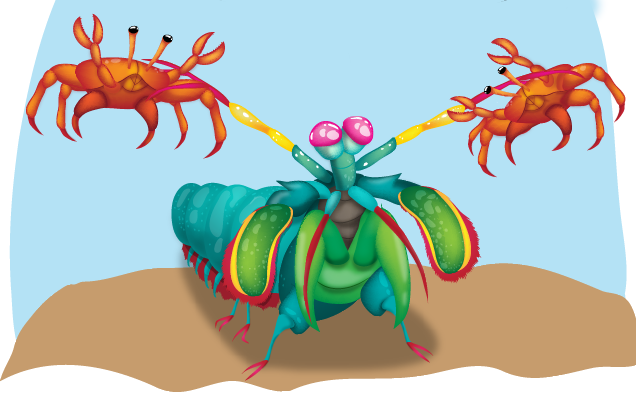

Fatos sobre o Stomatopoda
Descrição
Odontodactylus Scyllarus ou Stomatopoda é uma ordem de crustáceos marinhos da subclasse Hoplocarida, que agrupa cerca de 400 espécies, caracterizadas principalmente pela morfologia da segunda pata torácica, que é modificada em apêndice subquelado, lembrando uma pata de louva-a-deus.
Os estomatópodes são predadores ativos que caçam presas com o auxílio de um sentido de visão muito apurado e capaz de interpretar polarização no espectro ultravioleta e infravermelho.
Apresentam uma grande variação de tamanho, que pode ir de poucos milímetros até aproximadamente 40 cm nas espécies maiores.
São animais exclusivamente carnívoros, alimentando-se de camarões, caranguejos, moluscos, peixes e até mesmo outros da mesma ordem.
São capazes de desferir um dos mais rápidos e violentos golpes do reino animal, um soco que pode apresentar a velocidade de um tiro calibre 22.
Estomatópodes podem ser encontrados em quase todo o litoral brasileiro, mas não são animais fáceis de se observar pelos seus hábitos mais furtivos. Devem ser manuseados com muita cautela pois são animais preparados para se defender com força, caso sejam incomodados.
Habitat
Os Stomatopodas estão espalhados pelas costas dos mares tropicais e subtropicais. Porém, não são fáceis de achar, pois eles vivem em fundo consolidado, lodoso ou ainda arenoso, onde cavam seus buracos ou aproveitam-se dos orifícios deixados por outros animais para neles se instalar.
Olhos

A sua visão é uma das coisas que mais impressiona nesse animal, pois o seu sistema de visão possui doze cones sensíveis à luz e outros quatro que filtram a luz, totalizando 16 cones, o que lhes permite ver cores polarizadas e imagens multiespectrais. Eles conseguem interpretar a polarização no espectro ultravioleta e infravermelho.. Como cada cone pode ver cerca de 100 cores, os estomatópodes são capazes de ver 10^24, ou seja, 1 septilhão de cores. Em comparação, o olho humano vê 1 milhão de cores apenas. Conseguir enxergar isso é uma explosão nuclear de cores, luz e beleza
Soco
Outro fato interessante é o seu soco. Como forma de defesa ou de predatismo, essa força esmagadora que pode chegar a 80km/he é a responsável pelo seu título de "lagosta-boxeadora". Tal destreza é capaz de facilmente quebrar a carapaça de um caranguejo, as conchas duras e calcificadas de gastrópodes ou até mesmo quebrar o vidro reforçado de um aquário. Logo, não é recomendável manter o Stomatopoda em aquários.
Fontes:
- https://pt.wikipedia.org/wiki/Stomatopoda
- https://theoatmeal.com/comics/mantis_shrimp
- https://www.nationalgeographic.com/science/article/natures-most-amazing-eyes-just-got-a-bit-weirder
- https://realidadesimulada.com/este-animal-tem-a-visao-mias-incrivel-da-natureza-e-descobrimos-o-motivo/
- https://biologiaparabiologos.com.br/mantis-shrimp/
- https://aminoapps.com/c/mundo-animal-pt-br/page/blog/stomatopoda/5XXL_DQcVugBXa7VK4LzdwnMYQg7GXQDX